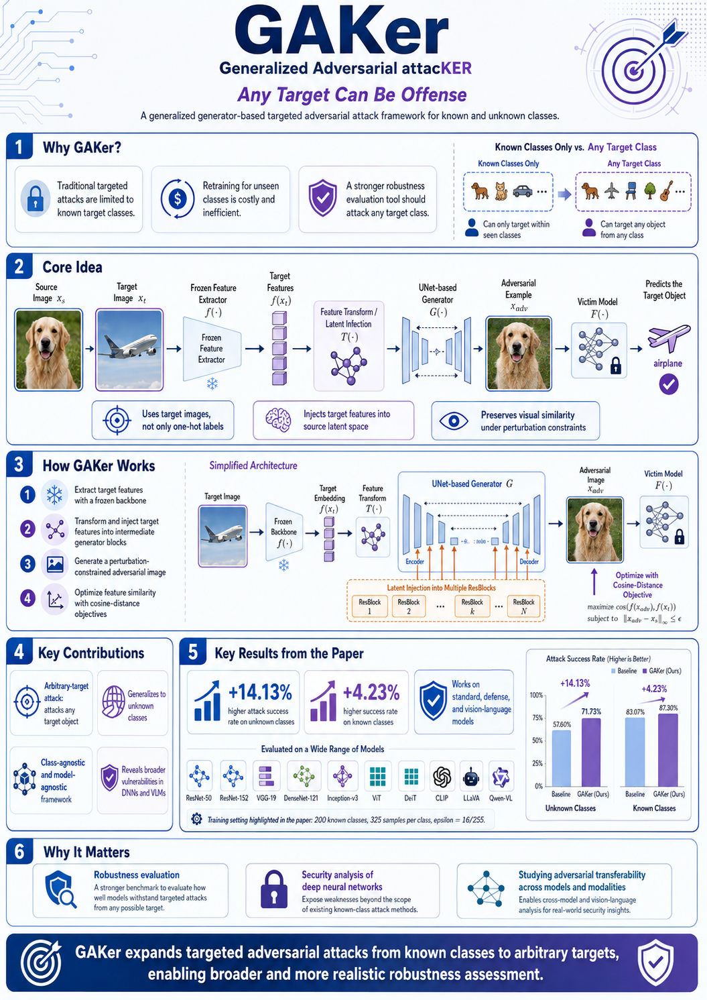

Adversarial ML
MiniGaker: Adversarial Image Generation and Evaluation Framework
PyTorch framework for generating adversarial samples, evaluating pretrained image classifiers, and saving experiment artifacts for reproducible robustness analysis.
- Supports targeted and untargeted adversarial evaluation.
- Tests ImageNet-trained ResNet50, ResNet152, and DenseNet121 models.
- Tracks ASR, clean accuracy, adversarial accuracy, metadata, logs, and outputs.